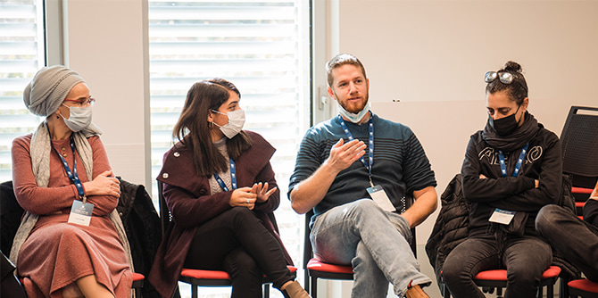
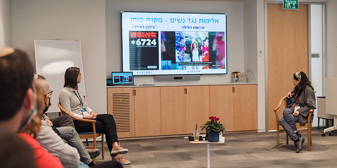

Fellows exchange ideas at the joint study day (Photo: Simanim Productions)
On December 30, 2021, the fellows of all the programs of the Mandel Leadership Institute came together for a joint study day at the Mandel Foundation’s headquarters in Jerusalem. This was the first structured event of the academic year that brought together all of the Institute’s fellows for opportunities for mingling and for shared learning.
The main goal of the Institute’s joint study days is to provide exposure and interactions on several levels. The joint study days expose fellows to the broad sweep of the Institute’s activities and programs, and to the various fields of impact with which it is engaged. They also introduce the fellows to the particular characteristics and fields of impact of the Institute’s different programs, via the program faculty and staff. In addition, the joint study days create interactions between fellows from different programs, both in study sessions and in informal contexts.
The programs that participated in the event were the women’s track of the Mandel Program for Leadership Development in the Haredi Community , the Mandel IDF Educational Leadership Program, the Mandel Program for Youth Leadership, and the Mandel Program for Leadership in Jewish Culture.
 Yael Hess, the Institute’s director, welcomes the fellows (Photo: Simanim Productions)
Yael Hess, the Institute’s director, welcomes the fellows (Photo: Simanim Productions)
The joint study day creates a space in which fellows from different backgrounds can sit together, hold constructive dialogue, and listen and respond. This helps strengthen the quality of their discourse and enhance their leadership skills, giving them greater opportunities to translate their ideas into a plan of action in the best possible way. In this sense, the joint study day forms part of a larger effort to promote understanding and foster interaction between fellows from different professional fields, whose paths do not often cross, in order to expand their circles of influence. The program was designed to ensure maximum involvement and engagement of the fellows, so as to foster interaction and collaborative discourse and thus encourage collaborations aimed at improving Israeli society.
Throughout the day, study sessions were held with the faculty members who lead the various programs, giving fellows the opportunity to learn about the particular issues and content that each program focuses on. One of the sessions explored the ways in which media professionals shape the news and provided insights on how to become smarter users of mass media. The session was led by Chen Artzi Sror, the director of the Mandel Program for Leadership in Jewish Culture, who is herself a professional journalist, and journalist Romy Neumark, who is a fellow in Cohort 5 of the program. The two of them discussed how that public agenda in Israel is formed, and shared their experiences about how the headlines that dictate public discourse are decided, how journalistic considerations are applied behind the scenes, and what one should bear in mind when reading a newspaper article or watching the news.
 The session on mass media (Photo: Simanim Productions)
The fellows were very satisfied with the study day. “It really honed my ability to remain in listening mode,” one fellow wrote in her feedback form. They fellows reported that they gained a more meaningful understanding of the fields of impact of the Institute’s different programs, created new connections, and learned about the different leadership challenges facing fellows in different professional fields. Fellows also noted the added value of these encounters for expanding their personal and professional networks and for promoting collaborations: “There are very many high-quality leaders whom I would not have met otherwise,” commented another participant. “I would like to take advantage of this more and hope we will have more opportunities to meet and develop relationships.”
The combination of unique content with interpersonal encounters is seen as the main strength of the joint study day. In the midst of a stormy Jerusalem winter, the positive atmosphere at the event was able to promote dialogue, openness, and diversity in the common pursuit of a better Israeli society. As we know from our work throughout the year at the Mandel Leadership Institute, there is no substitute for the curiosity and interest created by meeting face to face.
{kind=link}
{kind=link}